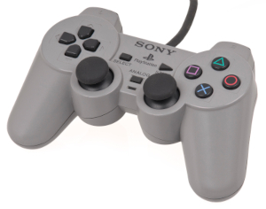

Como Surgiu o Playstation One Veja toda a trajetória do primeiro console da Sony, o Playstation One A marca Playstation é umas mais importantess na história dos games. Ao longo de três consoles, muitos gamers aprenderam a amar a “caixa” feita pela Sony, e agora, quase 20 anos depois do primeiro modelo chegar às lojas, todos aguardam com ansiosidade o anúncio de sua quarta geração. Conheçca um pouco desta longa história de sucesso e alguns fracassos: Playstation (PSone) No inicio da década de 90, a indústria de games crescia a uma velocidade nunca antes vista. Mesmo com a geração de 16 bits tendo sido lançada no biênio 1990/1991, no fim de 1993 as grandes potencias do mercado já discutiam quais os rumos seguir, e os jogos com gráficos 3D eram uma tendência natural. Foi neste momento que a Nintendo procurou a sua conterrânea Sony para iniciar o desenvolvimento de um novo console. Não demorou muito para que os ânimos e as ideias entrassem em conflito. A Sony apostava que o futuro da mídia física nos games seriam CDs com uma maior capacidade de armazenamento, além de serem mais fáceis de trabalhar. Já a Nintendo acreditava que ainda era muito cedo para abandonar os cartuchos. Neste momento, a parceria das empresas foi desfeita, e a Nintendo iniciou a produção do sucessor do SNES, o Nintendo 64. Quanto à Sony, com uma tecnologia em mãos sem um comprador em potencial, tomou a arriscada decisão de entrar na guerra dos consoles. O Playstation, conhecido como PSX ou PSOne, chegou às lojas japonesas em dezembro de 1994, ainda concorrendo com os consoles da geração anterior. Foi apenas um ano depois, em setembro de 1995, que o produto finalmente chegou ao Ocidente. Os primeiros jogos não empolgaram muito, e tinham grandes dificuldades em adaptar todo o potencial do aparelho, mas isto não afetou suas vendas, que foram acima das expectativas da Sony. Chegada do Memory Card Com seu principal concorrente, o N64, chegando às lojas apenas em 1996, o Playstation teve um bom tempo para conquistar os jogadores e, mesmo ainda sem saber, causou duas revoluções no mundo dos games: o memory card e o seu controle Dual Stick. Embora o memory card não fosse exatamente uma novidade nos games, foi a primeira vez em que ele foi visto como algo fundamental pelos jogadores, passando a ser vendido junto com o console na maioria dos países – algo que dificilmente aconteceu no Brasil. Primeiro controle (Joystick) Já o Dual Stick foi uma revolução silenciosa. Mantendo seu desenho nos dois sucessores do console, o controles lançado com o PSOne influenciou praticamente todos os criados desde então, seja o Gamecube da Nintendo, ambas as gerações do Xbox da Microsoft, e até mesmo portáteis como o Nintendo 3DS. Com seu formato ergonômico, duas alavancas e quatro botões no topo, é sem dúvida uma das grandes contribuições da Sony para toda a indústria de games.  Com jogos como Final Fantasy VII e Final Fantasy VIII, Metal Gear Solid e Tomb Raider, o Playstation foi o vencedor de um acirrada guerra de consoles contra o Nintendo 64, que tirou de uma vez por todas a Sega do ramo de hardwares. Em 2000 o console passou por uma reestilização, passando a ser chamado oficialmente de PSOne, mas os olhos do mercado já estavam voltados para o seu sucessor. Versões do PS One O PlayStation dominou o mundo, sendo o primeiro console (Ps1 Fat) a vender 100 milhões de unidades, mas nem sempre sua estrutura refletia sua grandeza. Muitas unidades apresentavam defeito, especialmente no leitor, o que fazia até com que algumas pessoas colocassem o videogame em pé ou de cabeça para baixo para resolver o problema. A revisão do primeiro PlayStation foi em 2000. Chamada de (Ps1 Slim), ela deixou o console muito menor, mais leve, e também mais resistente por dentro - apresentando menos defeitos. Ironicamente, o material do PSone dava a impressão de ter pior qualidade, enquanto o original parecia resistente no exterior e frágil no interior.